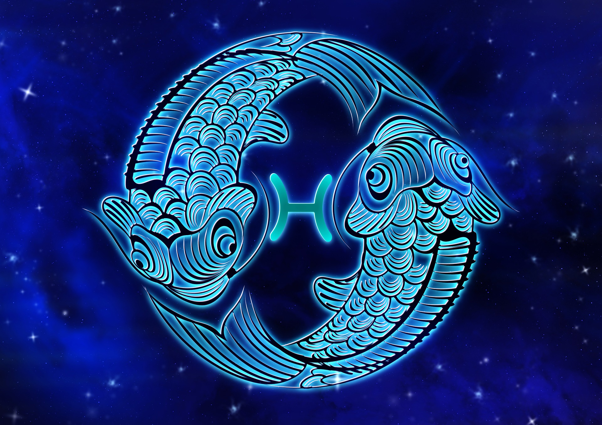

물고기자리

물고기자리(라틴어: Pisces 피스케스[*])는 물병자리와 양자리 사이에 놓여 있는, 황도십이궁 중의 하나이다. 현재 춘분점(Vernal equinox)이 이 별자리(ω Psc)에 있다. 세차운동으로 춘분점은 물병자리 쪽으로 천천히 이동하고 있다. 동아시아의 별자리로는 벽수의 '벽력'과 '운우', 규수의 '규수'와 '외병' 별자리를 포함한다.
신화이야기
물고기자리는 고대 메소포타미아 문명에 유래한 별자리로 생각되며, 그리스 신화인지는 확실한 것이 아니다. 통상, 띠로 매어진 2마리의 물고기로 그려진다.(초기에는 인어와 제비였다.) 그래서, 라틴어와 영어 등의 명칭은 복수형(라틴어:Pisces, 물고기를 뜻하는 일반명사 Piscis의 복수형)이다.
아프로디테와 에로스는 유프라테스 강에서 정취를 감상하고 있었다. 어느날 괴물 티폰(Typhoon)이 나타났는데 깜짝 놀라 물고기로 변신해 강으로 뛰어들었다는 이야기가 있다. 후에 하늘로 올라가 별자리가 되었다.